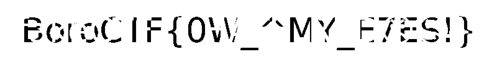

operator brief
Overview
Amplified tiny near-white RGB differences and isolated a blue-channel signal to reveal the hidden flag.
Retinal Burn from boroCTF.
Forensics Writeups · Easy difficulty.

skills demonstrated
Skills Demonstrated
attack path
Timeline
Inspect the bright image and clue.
Separate RGB channels and look for small differences.
Filter near-white pixels.
Amplify R - B and crop the flag area.
solution notes
Walkthrough
Initial observation
The image shows a stun grenade on a white background with the text:
TOO BRIGHT!!!
That clue strongly suggests the important data is hidden in pixels that are almost white. Looking closely or boosting contrast reveals faint watermark-like text in the background, but most of it is either noise or fake flags.
Approach
I inspected the RGB channels separately instead of treating the image as normal grayscale. The hidden text was not truly invisible; it was encoded using very small differences between near-white RGB values.
For example, many background pixels were close to:
(255, 255, 255)
(254, 254, 254)
(255, 255, 254)
Those differences are invisible normally, but they can be amplified.
A simple contrast stretch shows some fake background text, and checking color-dominant pixels reveals a decoy like:
fakeCTF{I_HATE_RED...}
Since the real flag format should be BoroCTF{...}, the fake flag was ignored.
Extracting the real message
The real flag appears when focusing on pixels where the blue channel is slightly lower than the red/green channels. In other words, compute a signal like:
R - B
Then amplify it.
from PIL import Image
import numpy as np
img = Image.open("burn.png").convert("RGB")arr = np.array(img, dtype=np.int16)
r = arr[:, :, 0]
g = arr[:, :, 1]
b = arr[:, :, 2]
# Keep only the almost-white background pixels
near_white = (r > 245) & (g > 245) & (b > 245)
# The flag is hidden as a tiny blue-channel difference
signal = np.maximum(0, r - b)
signal[~near_white] = 0
# Amplify the difference and invert so the text becomes dark
out = 255 - np.clip(signal * 120, 0, 255).astype(np.uint8)
# The flag is near the top of the image
crop = out[45:155, 0:800]
Image.fromarray(crop).resize((4000, 550), Image.Resampling.NEAREST).save("flag.png")The resulting enhanced crop reveals:
BoroCTF{0W_^MY_E7ES!}
BoroCTF{0W_^MY_E7ES!}
proof locker
Evidence
The “TOO BRIGHT!!!” clue points to near-white pixel differences.
Fake red-channel text appears as a decoy.
The real signal emerges from R - B on near-white pixels.
final artifact
Flag
BoroCTF{0W_^MY_E7ES!}
after action report
Lessons Learned
- Tiny channel differences can hide visible data after amplification.
- Decoy flags should be checked against the expected format.
- Cropping and scaling make faint stego evidence easier to read.